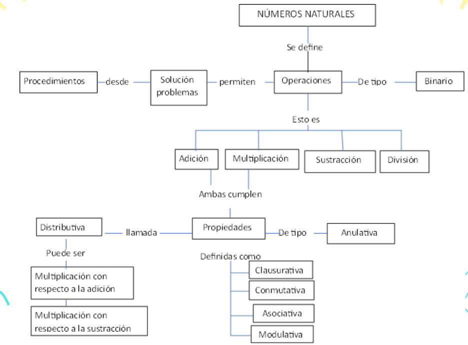

Números naturales
Números naturales

Los números naturales surgen de la necesidad que siente el ser humano de contar aquello que lo rodea. La humanidad tardo miles de años en pasa de contar la cantidad de objetos de un conjunto a la representación de esa cantidad mediante un numero El conjunto de los numero naturales se simboliza con la letra ℕ y se determina de por la extensión de la siguiente manera: ℕ = {0, 1, 2, 3, 4, 5, 6, 7, 8, 9,…}
Los numero naturales se puede representar en forma gráfica usando una recta números de manera que a cada número le corresponda un único punto, así